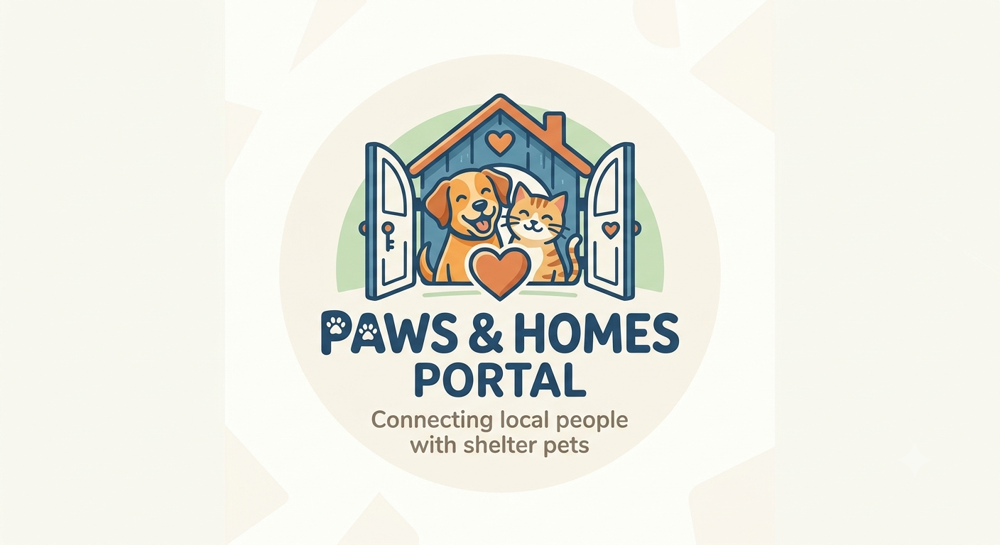
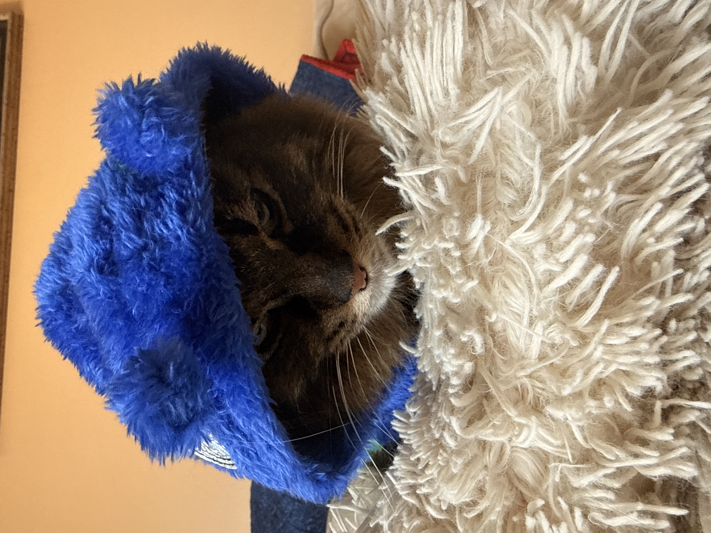

Barnaby
Gentle, exceptionally quiet, loves window perches, and gets along well with other household cats. Found him on Tinder.

Use our convenient sidebar filters to sort our current residents by species, age, or size. Click on any pet's individual profile card to learn more about their unique personality traits, background history, and home environment compatibility.
Gentle, exceptionally quiet, loves window perches, and gets along well with other household cats. Found him on Tinder.

High energy, incredibly NOT smart, masters basic meals quickly, and thrives in active homes with kids. (He will draw blood)

Exceptionally friendly(to some people), loves food, fully microchipped, and looking for a reason to judge you.